Setup
Exact models, checkpoints, resolutions and prompts, so a run can be reproduced or a difference in output traced to a difference in configuration.
What ran#
| arm | model | resolution | length | seeds |
|---|---|---|---|---|
| T2M | MotionGPT3 (OpenMotionLab), motiongpt3.ckpt | 512 × 512 render | 80 frames @ 20 fps (4.00 s) | 0, 1, 2 |
| T2V | LTX-2.5 22B distilled (Lightricks/LTX-2.5) | 1280 × 704 | 121 frames @ 24 fps (5.04 s) | 0, 1, 2 |
| I2V | LTX-2.5 22B distilled, conditioned on frame 0 of the T2M render | 1280 × 704 | 121 frames @ 24 fps (5.04 s) | 0, 1, 2 |
The pipeline#
prompt text
│
├──► MotionGPT3 ──► 22 HumanML3D joints ──► fit to SMPL (betas = 0) ──► render ──► T2M clip
│ │
│ frame 0, letterboxed
│ │
├──► LTX-2.5 (text only) ─────────────────────────────────────────────► T2V clip
│
└──► LTX-2.5 (text + conditioning image) ◄────────────────────────────► I2V clipThe T2M render is deliberately plain: SMPL-neutral with betas = 0, matte blue, mid-grey floor at y = 0 with a soft shadow, and a fixed three-quarter front-left camera (azimuth 35°, elevation 10°, 40° vertical FOV). Nothing in the render varies between prompts, so any difference in a T2M clip is a difference in the motion.
The prompts#
Every video prompt is the prompt text verbatim plus the suffix , static camera, full body visible, plain background. The T2M arm uses the text verbatim with no suffix — MotionGPT3 is trained on HumanML3D captions, where camera words are noise.
| id | prompt text | pair | load | tier |
|---|---|---|---|---|
| box_heavy | a person lifts a heavy box from the floor | box | heavy | core |
| box_light | a person lifts a light box from the floor | box | light | pair |
| barbell_heavy | a person lifts a heavy barbell from the ground | barbell | heavy | core |
| barbell_light | a person lifts a light barbell from the ground | barbell | light | pair |
| push_heavy | a person pushes a car | push | heavy | core |
| push_light | a person pushes a cart | push | light | pair |
| punch | a person throws right and left punches | punch | none | core |
| squat | a person squats down | squat | none | core |
| baseball | a person hit a ball with baseball bat | baseball | none | core |
tier: core are the six the experiment specification asked
for; tier: pair are the three light counterparts added so that each matched
pair actually has both members.The conditioning images#
The I2V arm needs a still. It gets frame 0 of the corresponding T2M render, letterboxed from 512 × 512 to LTX-2.5's 1280 × 704. Because the seed frame comes from the T2M clip, it changes with the seed.
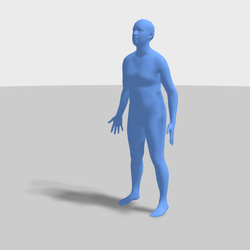
s0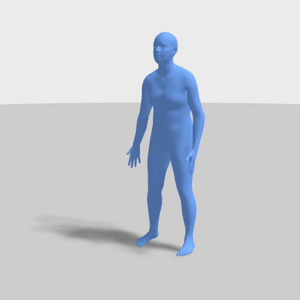
s1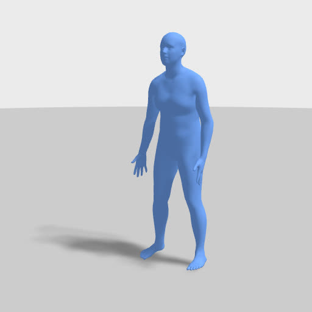
s2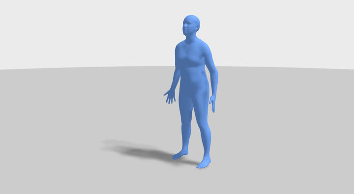
s0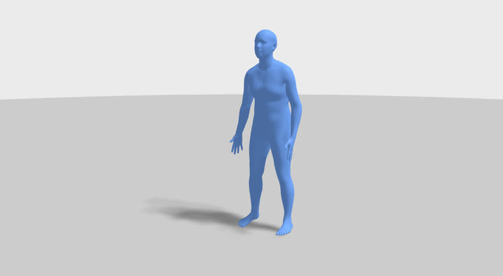
s1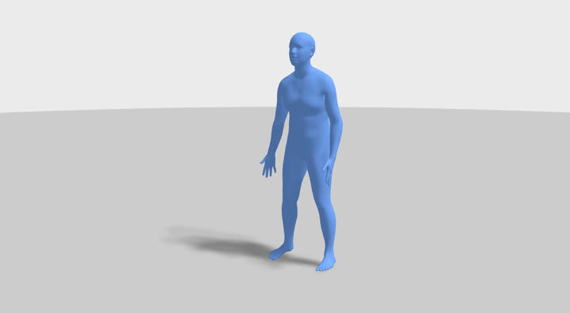
s2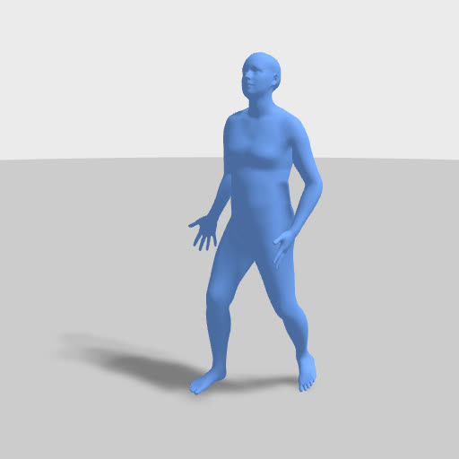
s0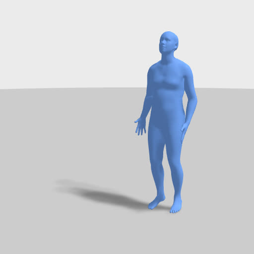
s1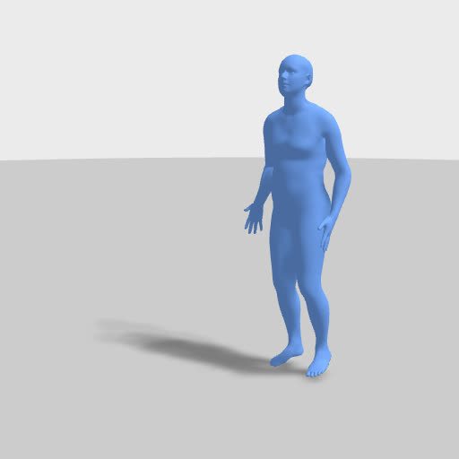
s2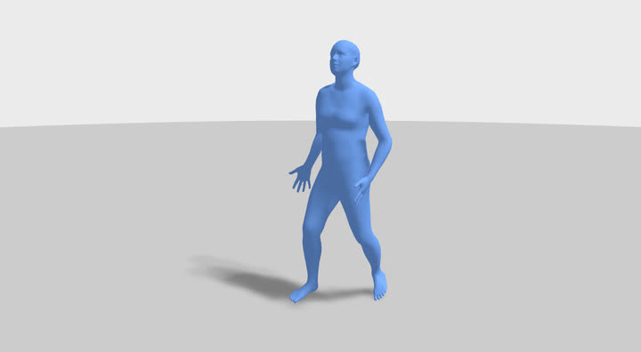
s0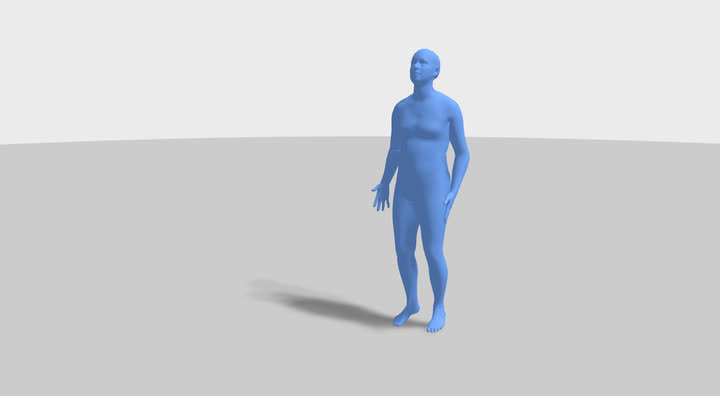
s1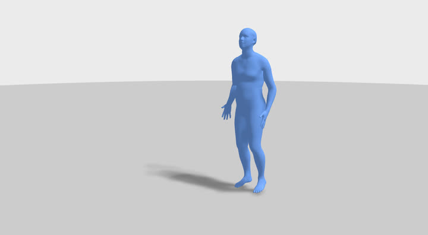
s2Configuration files#
configs/prompts.json— the nine prompts, their pairs, loads and tiers.configs/render.yaml— camera, materials, lighting and the video prompt suffix.data/*/manifest.json— one entry per generated clip, with the model, seed, conditioning-image hash, resolution and generation time. See Provenance.